Force
Supporter le froid, la faim et le combat afin de protéger son clan et tenir son serment.

Horde de Falkheim · Falkhemien(ne)
Présentation et organisation
Falkheim dominait des terres sauvages où le froid et la mer forgeaient des guerriers endurcis. Chaque clan défendait son chef, son honneur et ses traditions, mais tous reconnaissaient le Lord comme garant de l’équilibre et voix de la Horde.
Les sagas transmettaient les lois mieux que les parchemins. Serments, liens de sang et assemblées donnaient à ce royaume divisé une unité redoutable lorsque les drakkars prenaient la mer.
La faiblesse n’y était pas tolérée, mais la bravoure dans la défaite restait honorée. Femmes et hommes pouvaient gagner influence, rang et gloire par leurs exploits.

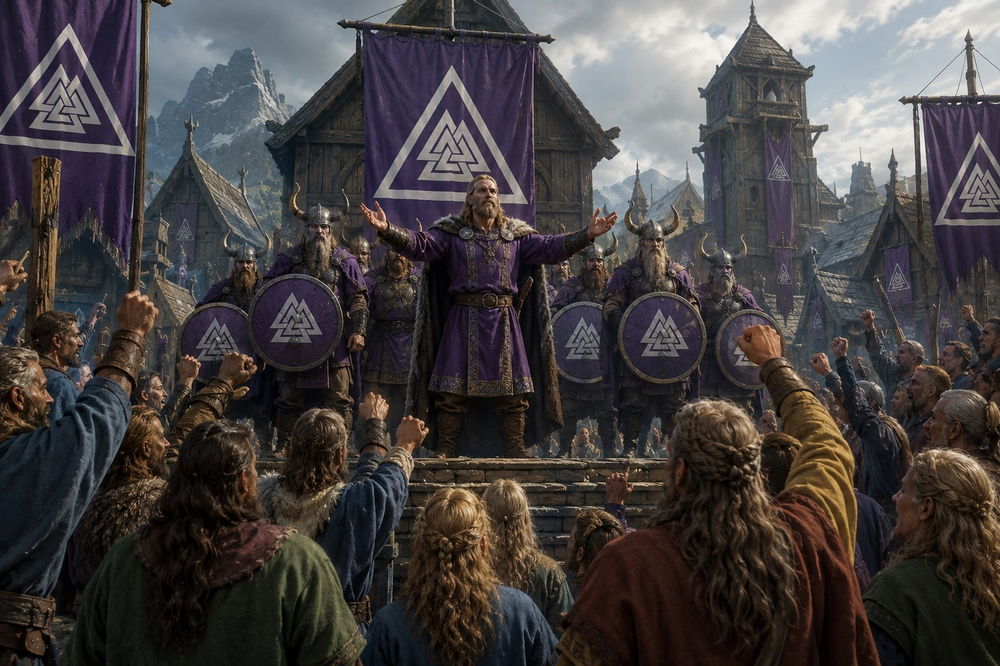
Un royaume sauvage
Montagnes enneigées, forêts denses et fjords tranchants imposaient des hivers longs et une préparation constante. Les villages de bois et de pierre vivaient de la chasse, de la pêche, de l’artisanat et, lorsque nécessaire, du pillage.
La mer était à la fois route et tombe. Les drakkars transportaient guerriers, colons et marchands vers des terres lointaines, faisant de chaque voyage une épreuve de résilience.
Supporter le froid, la faim et le combat afin de protéger son clan et tenir son serment.
Gagner par ses actes une place dans les sagas et laisser aux générations futures un nom digne d’être chanté.
Se relever de l’hiver, de la défaite et de la perte sans renoncer à l’unité de la Horde.
L’acier des mots
Le Lord n’est pas nécessairement le mieux né : il doit être le plus capable d’unir et de conduire. Les Jarls conservent leur autonomie et débattent des guerres, alliances, lois et jugements dans la grande salle.
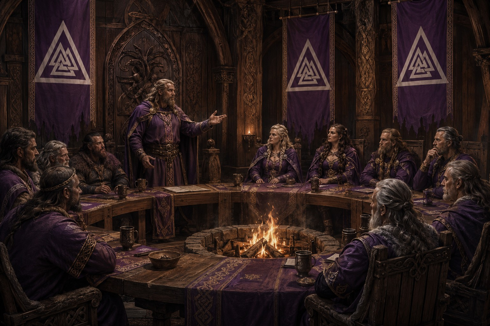
Chef suprême de la Horde, il arbitre les conflits majeurs, appelle les clans à la guerre et représente le royaume.
Les Jarls y débattent des lois, alliances et campagnes. Force de parole, sagesse et réputation déterminent l’influence.
Chefs autonomes de leurs terres et de leurs guerriers, ils doivent au Lord une loyauté constamment mise à l’épreuve.
Familles, serments et traditions locales forment le socle réel de la société et de l’armée.
Prêtres, anciens et conteurs transmettent les lois, la mémoire des héros et les avertissements du passé.
Hiérarchie sociale
Dirigeant suprême reconnu pour sa puissance et sa capacité à unir les clans.
Chef des armées et conducteur des grandes campagnes de la Horde.
Noble et chef de clan gouvernant un territoire avec une large autonomie.
Homme ou femme libre, artisan, fermier, marin et combattant.
Captif de guerre ou criminel asservi, parfois affranchi après service ou acte de valeur.
Rangs militaires
Officier et guerrier professionnel responsable d’un groupe de combattants.
Héros reconnu dont les exploits inspirent et rassemblent les guerriers.
Combattant d’élite légendaire transformant la peur en rage maîtrisée.
Soldat libre formant le cœur du mur de boucliers et des équipages.
HolmgangUn duel tranche les conflits d’honneur jusqu’à la reddition ou la mort.
JarlLe chef de clan ou le Lord rend une décision autoritaire pour préserver l’ordre.
VengeanceLes clans peuvent réclamer réparation, au risque d’entretenir des cycles sans fin.
ExilPire que la mort pour beaucoup, il retire le nom, les liens et l’identité du condamné.
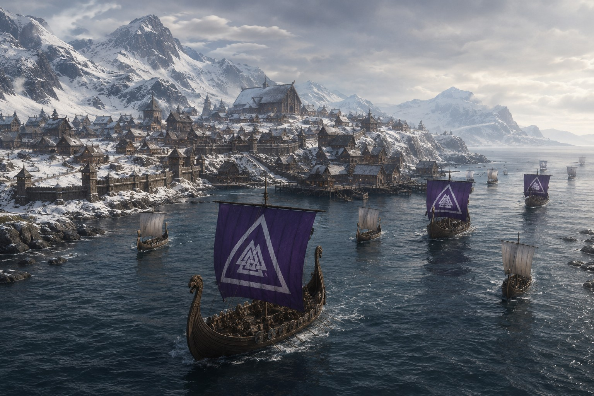
L’âge d’or avant la chute
Sous un Lord légendaire, les clans furent plus unis que jamais. Richesses, esclaves et prestige affluèrent vers des villes en expansion. Les sagas chantaient une Horde invincible, sans voir que cette grandeur dépendait toujours de l’équilibre fragile entre les ambitions des Jarls.
Histoire et fondation
Quatre livres racontent le serment fondateur, les guerres des clans, les relations avec les royaumes étrangers et la chute de Konungard.
Halnor unit les clans, Konungard s’élève et la Horde apprend à gouverner sans perdre sa nature sauvage.
Dans un Nord de fjords isolés et de clans rivaux, Halnor Ralkson convainquit d’abord plusieurs chefs de partager leurs réserves pendant un hiver meurtrier. Puis alliances et campagnes rallièrent progressivement les terres sous une même bannière.
Au Champ des Neuf Pierres, il vainquit huit clans coalisés. La Grande Assemblée d’Eldvik fixa les premières lois communes et reconnut Halnor comme premier Lord de Falkheim.
« Le sang fait un clan. Le serment fait un peuple. »
Eirik renforça le Conseil des Haches, agrandit les ports et créa une force permanente directement loyale au Lord. Falkheim passa d’une confédération guerrière à un État capable d’administrer et de protéger ses provinces.
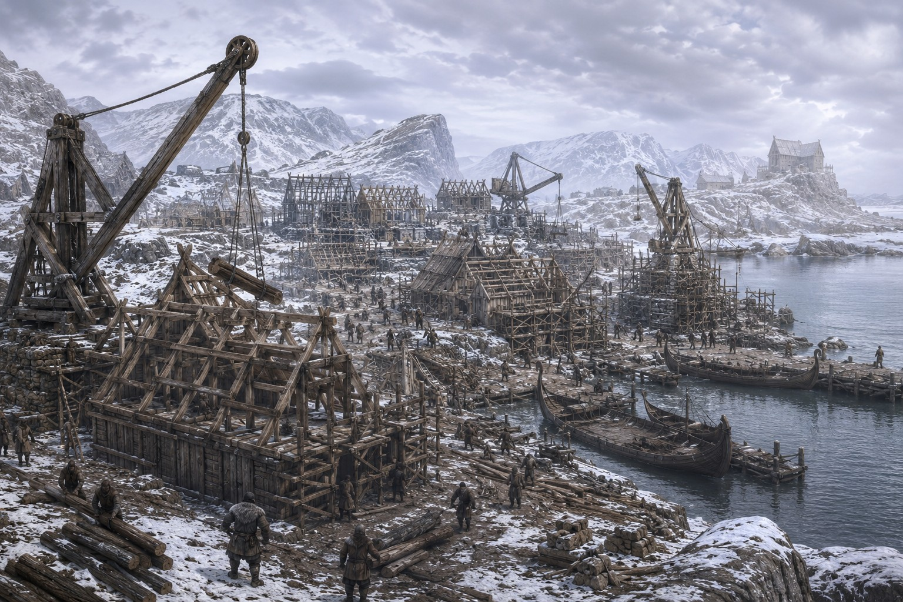
Au croisement des routes du fjord, artisans et guerriers bâtirent port, murailles, quartiers marchands et Grande Salle Royale. Konungard devint le cœur politique, économique et culturel de la Horde.
Épices, étoffes, encens et chevaux d’Asharun furent échangés contre bois, fourrures, fer et produits maritimes. Le traité ouvrit une longue période de prospérité.
Valkard exploita le terrain escarpé pour vaincre une coalition supérieure en nombre. La victoire confirma l’autorité du Lord sur les clans récemment unifiés.
Des hivers successifs détruisirent les récoltes et isolèrent les villages. Les greniers royaux furent ouverts et des navires transportèrent les vivres, mais de nombreuses familles durent abandonner leurs terres.
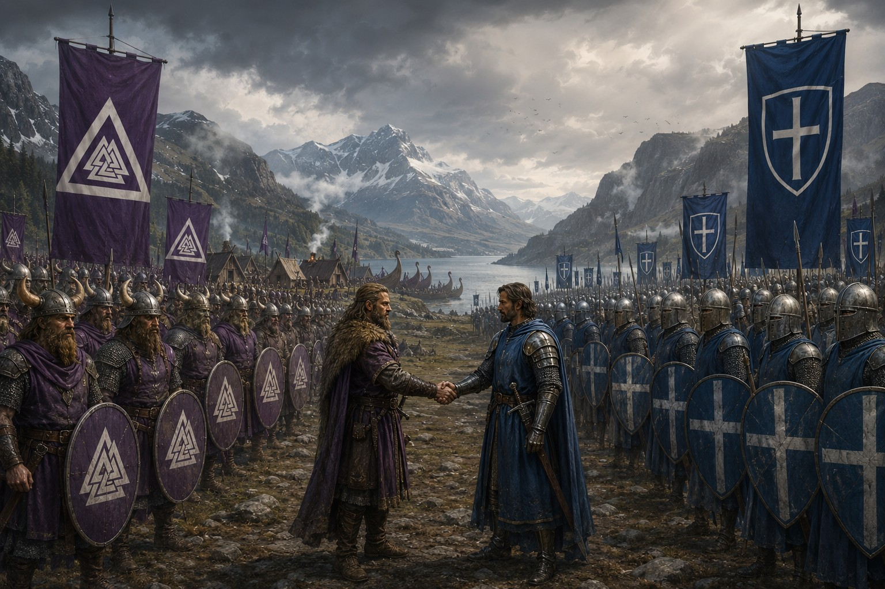
Des colons falkhemiens découvrirent des plaines revendiquées par Vanloria. Plutôt que de se combattre, les deux royaumes conclurent un accord : terres agricoles pour la Horde, guerriers nordiques pour les campagnes de la Couronne.
Jarls, chefs et représentants des colonies débattirent des lois, des frontières et du commerce. Les réformes adoptées consolidèrent la coopération entre provinces.
Quais, entrepôts et chantiers navals accueillirent marchands et drakkars de guerre. La capitale devint l’un des principaux centres des mers du Nord.
Révoltes, tertres maudits, géants et guerres navales éprouvent la cohésion des clans.
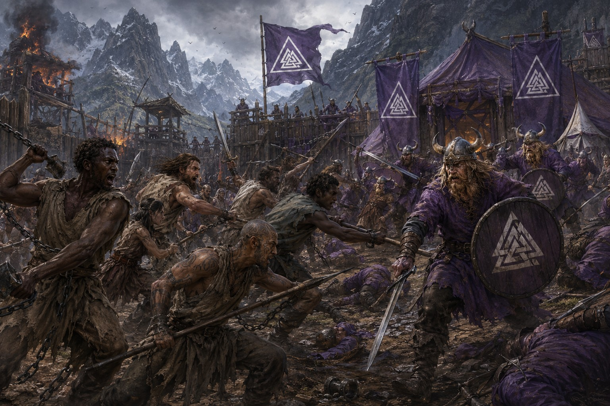
Des milliers de Thralls se soulevèrent contre les mines, les domaines et les ports. L’armée encercla leur camp aux Trois Vallées et captura Kjell, mais la violence du conflit imposa des réformes limitant certains abus.
Des chercheurs de trésors ouvrirent une chambre souterraine malgré les avertissements. Une armée de guerriers morts envahit les villages jusqu’à ce que les jarls la repoussent et scellent les ruines.
Une maladie frappa ceux qui avaient touché les dépouilles et les champs de bataille. Isolement, tertres sacrés et années de lutte finirent par contenir le mal.
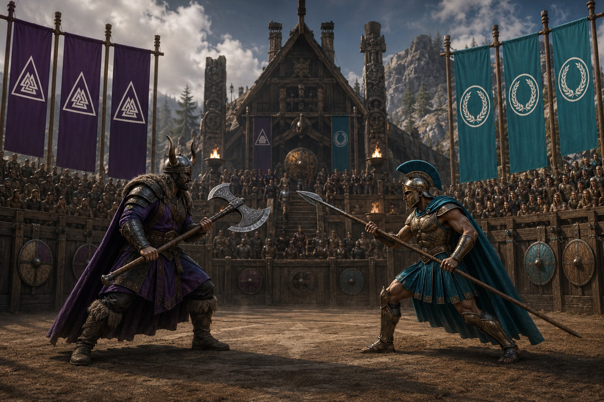
Drakkars et trières s’affrontèrent pour le contrôle d’une route maritime stratégique. Aucun camp ne prit l’avantage ; un traité rétablit la liberté de navigation.
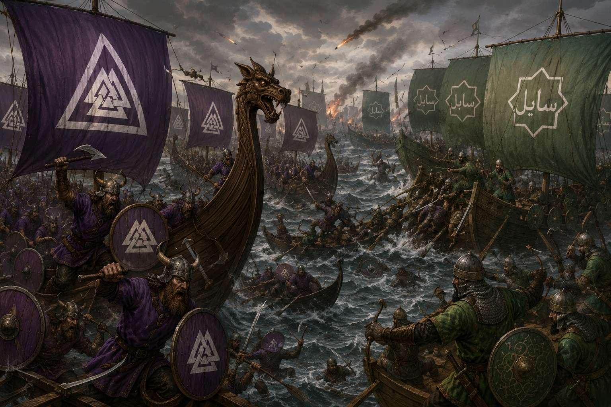
Accusations de piraterie et saisies de cargaisons transformèrent une coopération prospère en guerre. Au Golfe des Flammes, des centaines de navires combattirent sans victoire décisive ; les deux royaumes cessèrent les hostilités, épuisés.
Plusieurs jarls traquèrent le géant qui ravageait les villages. Au sommet des Montagnes du Givre, la lance runique d’Eirik Brise-Glace transperça son cœur ; sa tête fut exposée à Konungard.
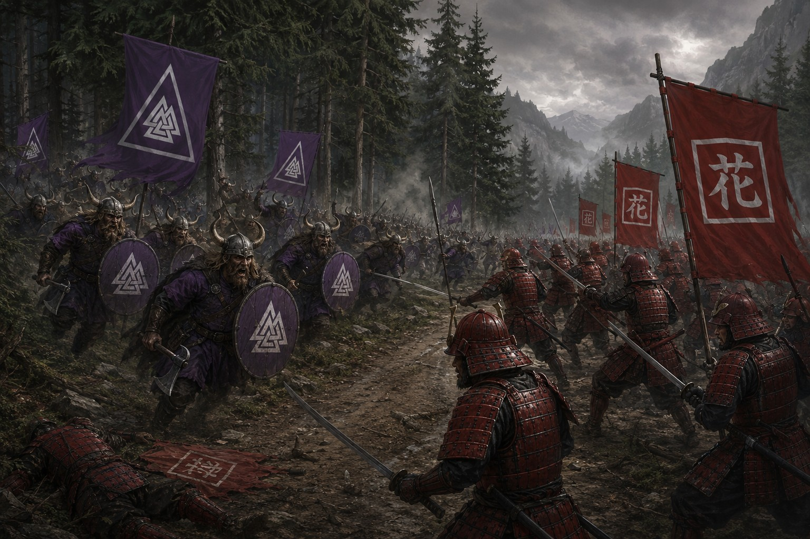
Une délégation nordique fut accusée d’avoir profané les usages sacrés de la cour. Après des mois de tension, excuses mutuelles et nouvelles règles diplomatiques empêchèrent la guerre.
Vents, neige et froid gelèrent rivières et ports. Plusieurs villages furent isolés et des navires écrasés sous la glace avant que la tempête ne s’apaise.

L’Enclave livra des renseignements sur la flotte falkheimienne en échange d’avantages occidentaux. Les ambassadeurs furent renvoyés et la confiance entre les deux nations disparut presque entièrement.
Colonies, diplomatie, richesse et invasion étrangère placent Falkheim au centre des rivalités du monde.
Un baron attaqua la colonie sans l’autorisation de sa Couronne. La garnison tint jusqu’aux renforts et Vanloria réaffirma officiellement la légitimité de Vargvik.
Des explorateurs traversèrent banquises et brouillards jusqu’à un territoire de plaines enneigées, montagnes de glace et fjords sans fin. Le climat empêcha la colonisation, mais consacra le prestige des navigateurs.
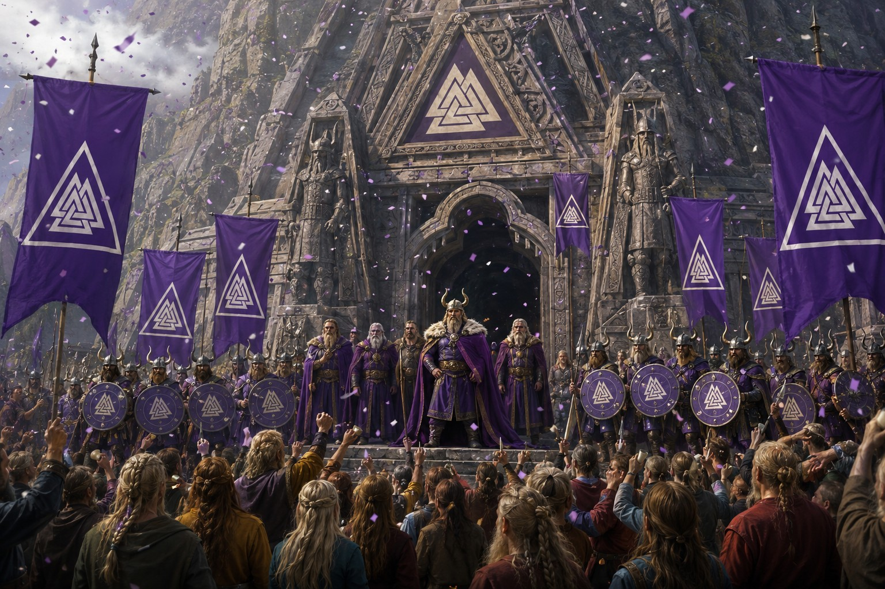
Roldrug fit creuser un mausolée près de Konungard pour réunir Lords et héros. Runes, fresques et statues racontèrent l’histoire de la Horde dans un sanctuaire visible depuis le fjord.
La foudre embrasa des forêts asséchées. Villages et habitants furent évacués pendant des jours de lutte avant que les pluies n’éteignent les flammes.
Le fils d’Olgar-le-Noir et son neveu divisèrent les jarls. Après des mois de guerre, le fils remporta la bataille décisive puis accorda des concessions aux vaincus pour préserver la paix.
Une grotte livra pièces d’argent, armes, bijoux et artefacts des anciennes sagas. Une grande partie fut transportée à Konungard pour étude et exposition.
Sous un brouillard d’automne, une flotte shintanienne prit ports et colonies sans déclaration de guerre. La Horde se rassembla et transforma fjords, forêts et vallées en pièges.
La victoire du Fjord des Corbeaux lança la contre-offensive. Après des années de combats, Shintai évacua les terres conquises et les frontières furent rétablies.
Guerres, mauvaises récoltes et baisse du commerce vidèrent les caisses. Réduction de taxes, infrastructures et soutien aux échanges permirent une reprise progressive.
L’Enclave accorda des prêts et investit dans les ports de Falkheim. Malgré la méfiance des jarls, cette aide relança le commerce et rapprocha temporairement les anciens rivaux.
Les anciennes rivalités reviennent, le ciel se colore de violet et Konungard livre son dernier combat.
Une querelle de terres entraîna d’autres clans dans deux années de raids. Le Conseil échoua à imposer ses cessez-le-feu ; seule l’épuisement des adversaires permit une paix fragile.
Konungard accueillit les représentants d’Erythros pour des épreuves de hache, de lutte, de navires et d’armes. Les deux champions furent déclarés égaux puis échangèrent leurs armes comme frères d’honneur.
Des créatures cristallines gelèrent rivières, forêts et maisons. Les clans oublièrent leurs rivalités et repoussèrent l’invasion vers les régions septentrionales au prix de nombreux héros.
Nuits silencieuses, fjords immobiles, silhouettes sur les crêtes et aurore violette annoncèrent la catastrophe. Même les guerriers les plus courageux ressentirent une peur sans nom.
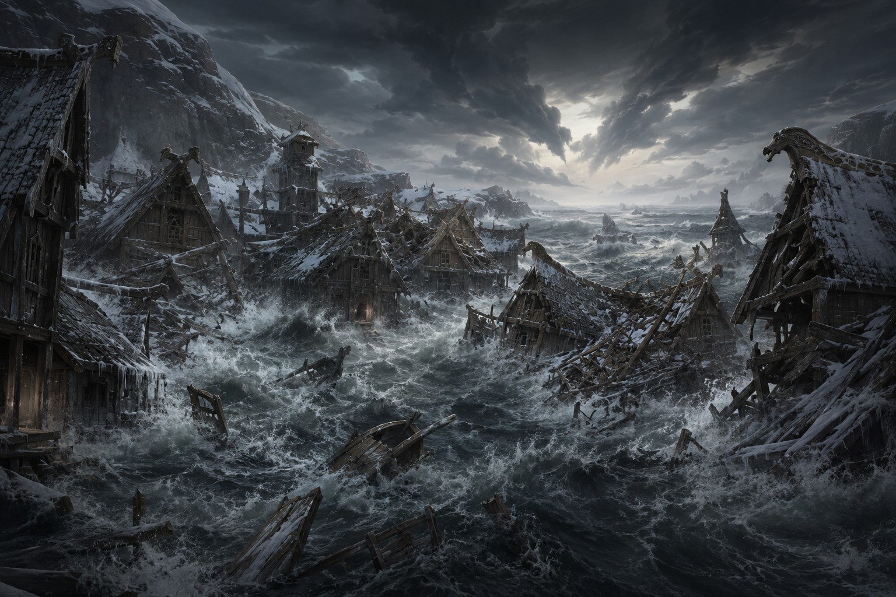
Séismes et failles engloutirent villages, routes et falaises. Des murs d’eau détruisirent les ports avant que des créatures de glace vivante, éclairées de violet, ne surgissent au cœur de Konungard.
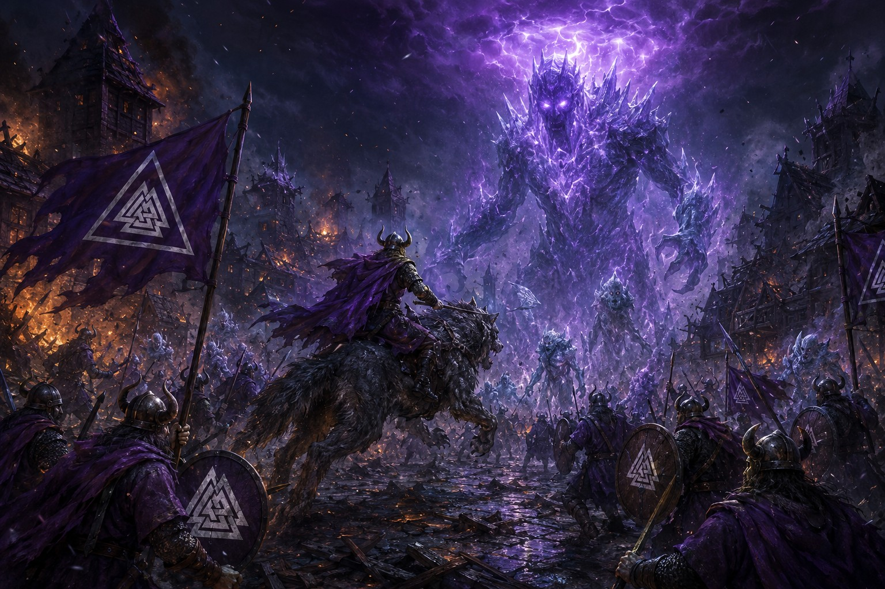
Clans, habitants et vétérans tinrent chaque carrefour contre une armée qui gelait tout sur son passage. Puis une main immense émergea d’une faille et révéla un titan de glace plus haut que les murailles.
Le dernier Lord chevaucha son loup de guerre Fenral entre les ruines. Il escalada le géant, atteignit le cristal violet de son front et l’abattit d’un coup de hache.
Le titan se fissura, puis la terre, les montagnes et le ciel se brisèrent avec lui. Erold et Fenral restèrent côte à côte jusqu’à ce que la lumière les engloutisse.
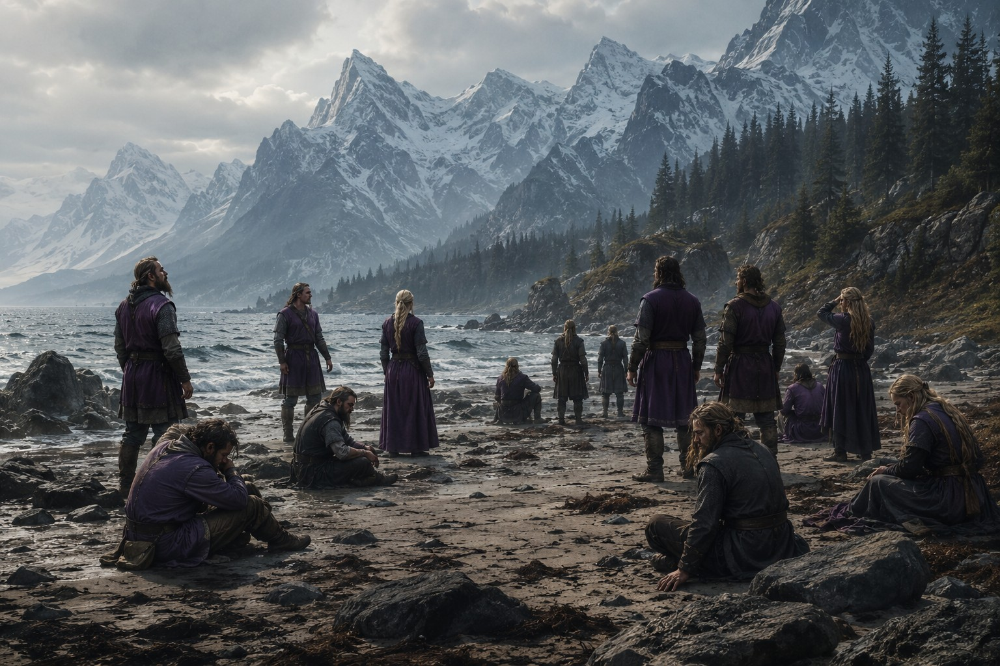
Les survivants ouvrirent les yeux sur une plage bordée d’une mer calme, sous un soleil inconnu. Falkheim était tombée, mais tant que ses serments vivaient dans ses enfants, son histoire n’était pas terminée.
Le début d’un nouvel âge
Le Nouveau Monde n’avait ni Konungard, ni drakkar, ni tertre ancestral. Mais les survivants pouvaient encore former un cercle, transmettre une saga et lever ensemble le même bouclier. Tant que la Horde se souvenait d’elle-même, Falkheim n’était pas morte.